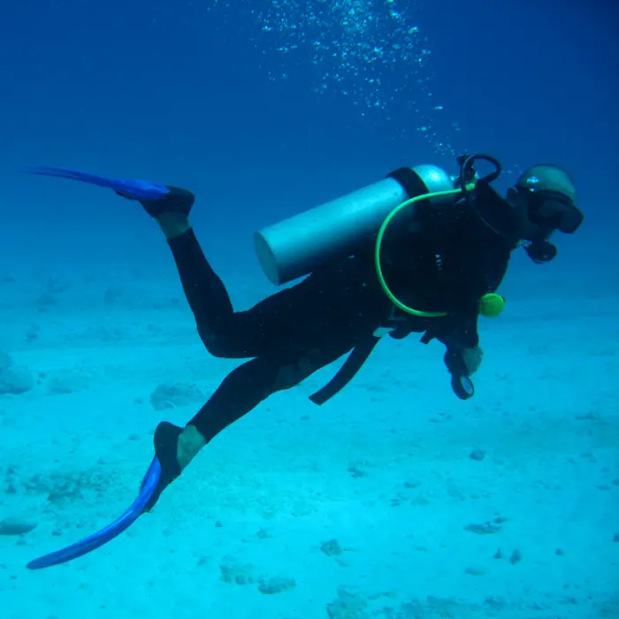
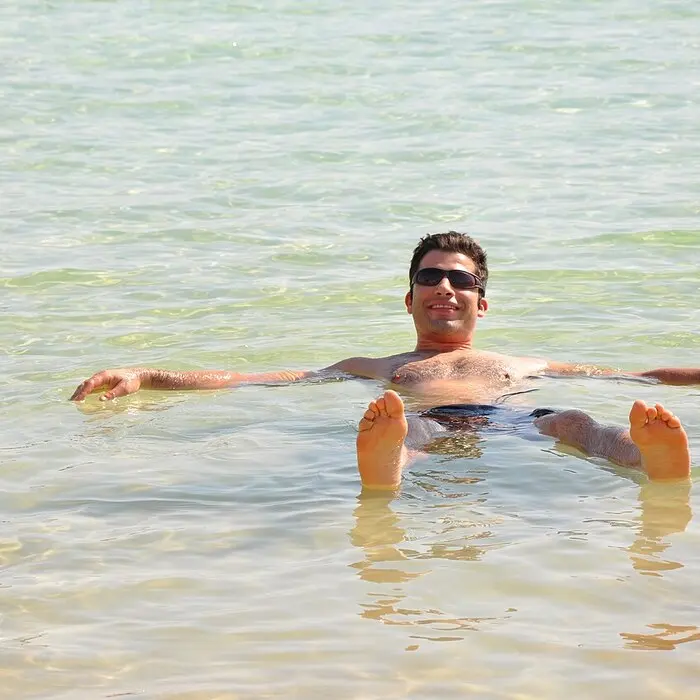

Positive Buoyancy (Floats)
ρobj < ρfluid — The object rises until its displaced fluid weight matches its own weight (Fb = W at rest).
Physics · Lesson 05 · Fluid Mechanics
A tiny pebble plunges straight to the seabed, yet a 200,000-ton steel container ship glides right across it. The answer is a 2,200-year-old discovery about displaced fluid — and it explains submarines, hot air balloons, and King Hiero's suspicious golden crown.
Interactive Lab 01
Predict first, then drop, drag, or dip an object on a spring scale. Watch the tank level rise or spill into the catch beaker to verify that buoyant force equals the weight of displaced fluid.
Tip: Drag the block inside the tank — push a floating block underwater and let go to watch buoyant force launch it back up.
| Object | Fluid | ρobj / ρfluid | Vdisp | Fb vs W | Result |
|---|---|---|---|---|---|
| Click Log Trial after a test to record mass, displaced volume, and forces here. | |||||
Core Physics
Fluid pressure equals P = ρgh: the deeper you go, the more fluid weight presses down from above. Left and right pushes on a block sit at matching depths and cancel sideways. But the bottom sits deeper than the top, so upward bottom pressure > downward top pressure. Subtract them, and the difference equals the exact weight of the fluid the block pushed out of the way!
Multiply fluid density (kg/L), submerged volume (L), and gravity (9.81 m/s²) to find the upward push in Newtons.
A spring scale underwater feels lighter by the exact weight of displaced fluid — that's how Archimedes tested the crown.
When floating at rest, Fb balances Weight — so the submerged fraction equals the ratio of object density to fluid density.
ρobj < ρfluid — The object rises until its displaced fluid weight matches its own weight (Fb = W at rest).
ρobj = ρfluid — Fully submerged, Fb = W exactly, so the object stays suspended at any depth without rising or sinking.
ρobj > ρfluid — Even 100% submerged, W > Fb. On the tank floor, the floor supplies the rest: Fb + FN = W.
Material Properties
Density measures how tightly packed an object's mass is inside its volume. Conveniently, 1.00 g/cm³ = 1.00 kg/L = 1,000 kg/m³.
| Material | Density (g/cm³) | Relative to Fluid | Result in Fresh Water | Lab |
|---|
No — the water level stays identical! Because ice has a density of 0.92 g/cm³, it floats with 92% of its volume underwater. That means it has already displaced a mass of liquid water equal to its own mass. When the ice melts into liquid water, its volume shrinks by 8% — fitting seamlessly into the exact cavity it was already displacing.
No (for rigid objects)! While fluid pressure increases with depth on every side, it increases equally on both the top and bottom of an object. The difference between top and bottom push — the buoyant force — depends only on displaced volume and fluid density (Fb = ρfluid Vsub g), which stays virtually constant once fully submerged.
Interactive Lab 02
King Hiero suspected his goldsmith mixed cheaper silver into a 1,000 g crown. In air, both a pure gold ingot and the crown balance at 9.81 N. Submerge both in water — just as Archimedes imagined and young Galileo built in La Bilancetta (1586) — to expose any silver hidden inside.
Interactive Lab 03
Solid steel has a density of 7.85 g/cm³. A ship floats by enclosing a huge volume of air so its average density drops below 1.00 g/cm³. A submarine flips that average density above or below seawater on demand using ballast tanks.
Notice how a ship loaded right to its safe ocean mark becomes overloaded when it sails up a freshwater river (lower fluid density → deeper draft).
Engineering & Nature
Buoyancy works in every fluid — both liquids and gases — shaping naval design, aviation, oceanography, and wildlife.
Naval engineers shape hulls to displace enough seawater to balance hull, fuel, and cargo weight — leaving safe freeboard above the painted load line.
Heating air causes molecules to spread apart, lowering density inside the balloon envelope. Cooler, denser outside air pushes underneath and lifts it skyward.

Scuba divers tune inflatable buoyancy vests — while bony fish inflate internal swim bladders — to match surrounding water density and hover effortlessly.

Because Dead Sea water packs 1.24 kg into every liter, you only need to displace ~81% of your body volume to balance your entire weight — letting swimmers read a book effortlessly.
History of Science
Archimedes proved the laws of hydrostatics mathematically in his treatise On Floating Bodies (c. 250 BC) — work that later inspired Galileo's first scientific instrument and 19th-century ocean safety law.
When Roman soldiers finally breached Syracuse after a two-year siege — prolonged by Archimedes' defensive levers and grappling claws — a soldier discovered the 75-year-old mathematician sketching geometric proofs in the sand and struck him down against orders to bring him back alive.
Rather than dunking a crown in a messy overflow bowl, a 22-year-old Galileo Galilei wrote his debut paper, La Bilancetta ("The Little Balance"), measuring how far a counterweight had to slide along a fine brass wire to restore balance underwater — turning Archimedes' insight into a precision laboratory instrument.
Review & Apply
Use ρ = m ÷ V, Fb = ρfluid Vsub g (g = 9.81 m/s²), and compare to fresh water (1.00 g/cm³).
Easy1. An object has an average density of 0.70 g/cm³. What will it do when dropped into fresh water (1.00 g/cm³)?
Easy2. A granite rock has a mass of 270 g and a volume of 100 cm³. What is its density in g/cm³? (ρ = m ÷ V)
Medium3. A 2.00 L block is completely submerged in fresh water (1.00 kg/L). Using Fb = ρfluid Vsub g with g = 9.81 m/s², what upward buoyant force acts on it in Newtons?
Medium4. Ice has a density of 0.92 g/cm³. What percentage of an iceberg sits below the surface in fresh water? (% sub = ρobj ÷ ρfluid × 100)
Challenge5. A hollow steel sphere has an outer volume of 400 cm³ and a total mass of 120 g. What is its average density in g/cm³?
Challenge6. The Dead Sea has a density of 1.24 g/cm³, while a swimmer averages 1.00 g/cm³. What percentage of the swimmer's body floats above the surface? ((1 − ρbody ÷ ρfluid) × 100)
Challenge7. King Hiero's 1.00 kg suspect crown displaces 67.3 cm³ (0.0673 L) of fresh water when submerged. Using Fb = ρfluid Vsub g (with 1.00 kg/L and g = 9.81 m/s²), what upward buoyant force acts on the crown in Newtons?